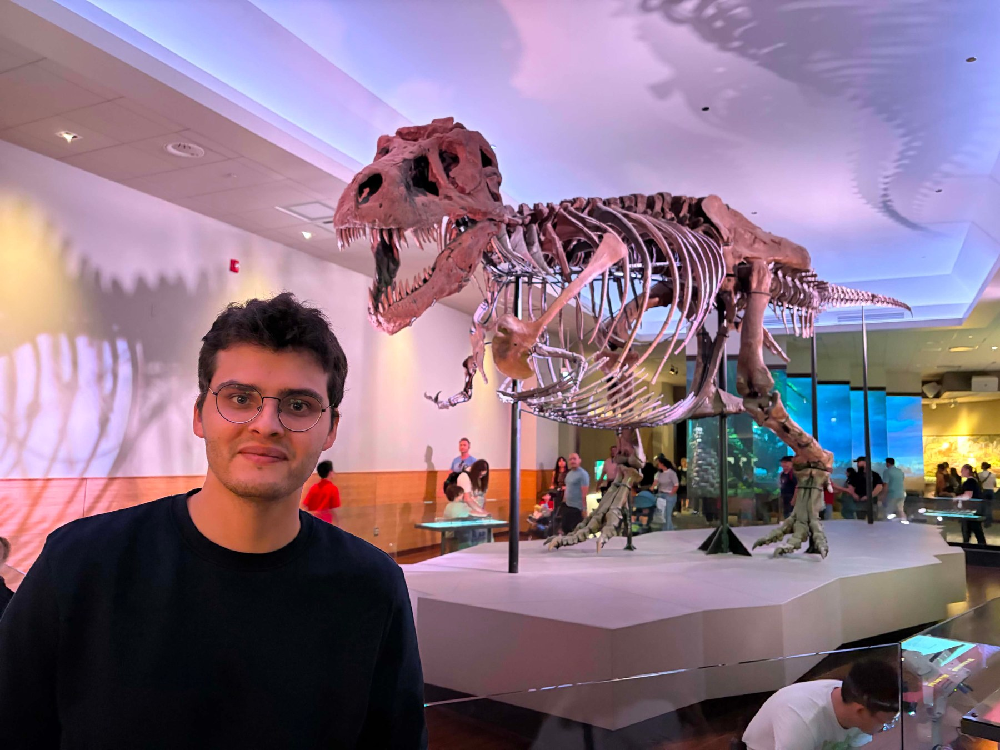
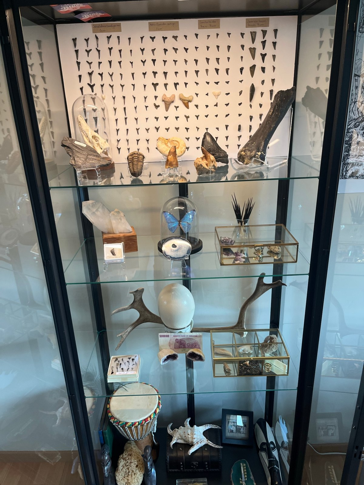

Hallo, ik ben Viktor
Fossielen en natuurhistorie verzamelen is mijn hobby. Deze website is de virtuele versie van mijn kast.
Viktor
Ik ben Viktor. In mijn vrije tijd verzamel ik fossielen, mineralen en natuurhistorische stukken: van haaientanden die ik zelf op het strand van Cadzand vond tot een megalodontand, een ijzermeteoriet en een hermelijnschedel uit Lubbeek.
Mijn collectie stel ik privé tentoon in een vitrinekast. Deze website is daar de virtuele versie van: zo kan iedereen de stukken van dichtbij bekijken en ontdekken welk verhaal erachter zit.
Waar ik een soort of herkomst niet zeker weet, staat dat er eerlijk bij. Tips of aanvullingen zijn altijd welkom.
Van kast naar website
Bovenaan staan de fossielen, met de grote plaat haaientanden als achtergrond. Daaronder kristallen, mineralen en natuurhistorische stukken. Elk stuk dat je op deze website ziet, staat echt in de kast.
